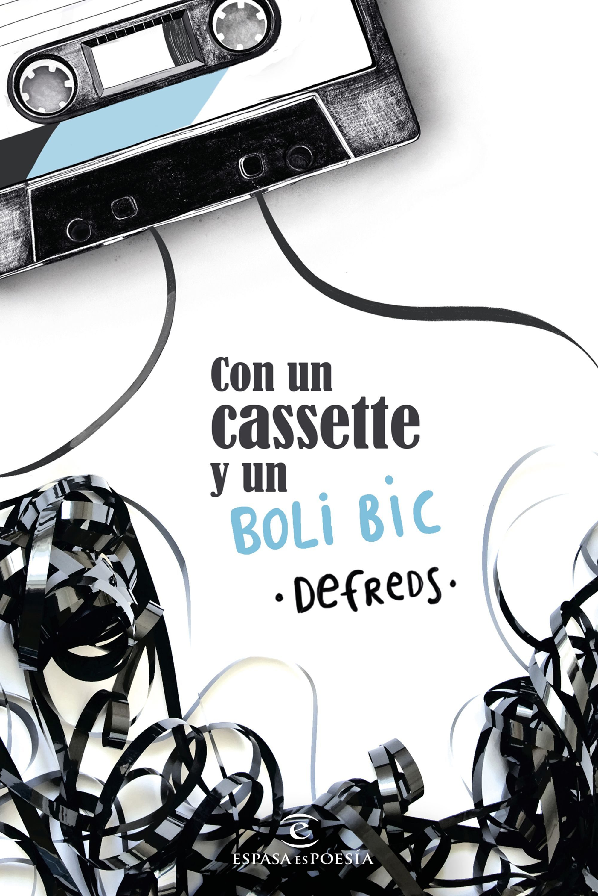
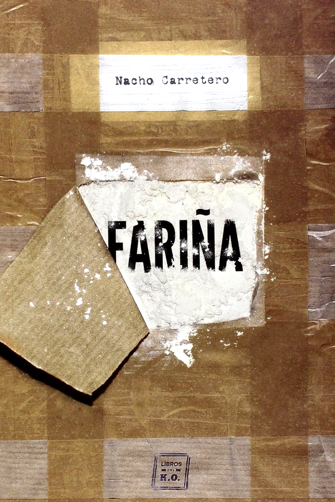
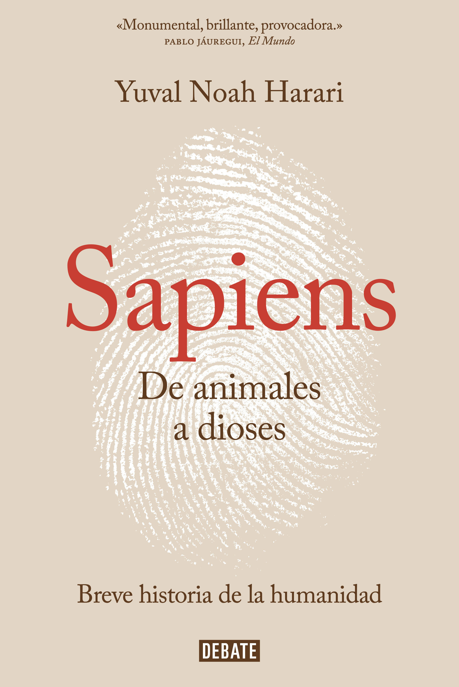
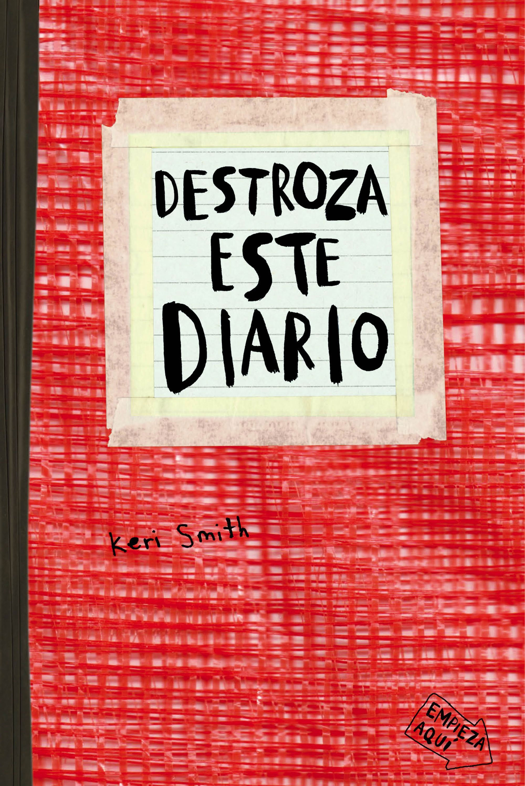
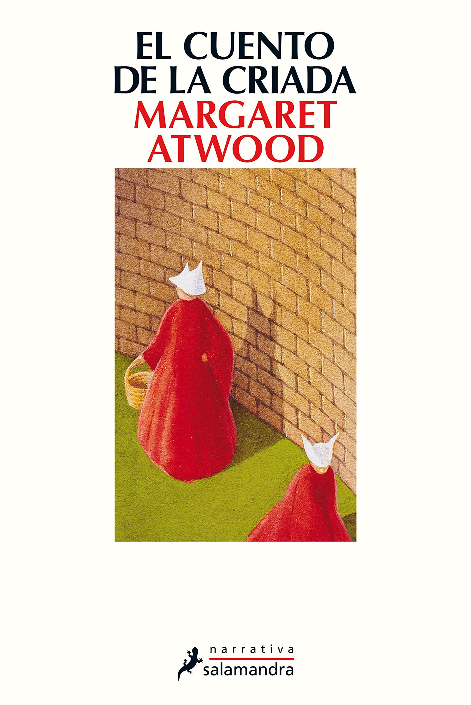

Más vendidos
La desaparición de Stephanie Mailer
Joël Dicker
La noche del 30 de julio de 1994 la apacible población de Orphea, en los Hamptons, asiste a la gran apertura del festival de teatro. Pero el alcalde se retrasa... Mientras tanto, Samuel Paladin recorre las calles vacías buscando a
su mujer, hasta hallar su cadáver ante la casa del alcalde. Dentro, toda la familia ha sido asesinada.
45.05€ 21.75€

Con un cassete y un boli Bic
Defreds / José A. Gómez Iglesias
Poemario que aúna poemas y prosa poética, en la misma línea que los publicados anteriormente por el autor y con un contenido que entusiasmará a los lectores: la cotidianidad, la pasión, el desamor, la amistad, los momentos dulces,
la tristeza, la infancia, los territorios del cariño, la esperanza en un mundo mejor y, sobre todo, el convencimiento de que el amor puede con todo. La vida pasando.
45.05€ 21.75€

Fariña
Nacho Carretero
Coca, farlopa, perico, merca, Fariña.Nunca Galicia comercializó un producto con tanto éxito. Aunque ahora parezca una pesadilla lejana, en los años 90 el 80 por ciento de la cocaína desembarcaba en Europa por las costas gallegas. A
través de testimonios directos de capos, pilotos de planeadoras, arrepentidos, jueces, policías, periodistas y madres de toxicómanos, Nacho Carretero retrata con minuciosidad este paisaje criminal. Fariña incluye, además, un repaso
inédito por los clanes que siguen operando hoy en día.
45.05€ 21.75€
Las hijas del capitán
María Dueñas
Nuevo libro de María Dueñas. Nueva York, 1936. La pequeña casa de comidas El Capitán arranca su andadura en la callecatorce, uno de los enclaves de la colonia española que por entonces reside en la ciudad. La muerte accidental de su
dueño, Emilio Arenas, obliga a sus hijas veinteañeras a asumir las riendas del negocio mientras en los tribunales se resuelve el cobro de una prometedora indemnización. Abatidas y acosadas por la urgente necesidad de sobrevivir,
las temperamentales Victoria, Mona y Luz Arenas se abrirán paso entre rascacielos, compatriotas, adversidades y amores, decididas a convertir un sueño en realidad. Con una lectura tan ágil y envolvente como conmovedora, Las hijas
del Capitán despliega la historia de tres jóvenes españolas que cruzaron a la fuerza un océano, se asentaron en una urbe deslumbrante y lucharon con arrojo para encontrar su camino: un tributo a las mujeres que resisten cuando
los vientos soplan en contra, y un homenaje a todos aquellos valientes que vivieronlaaventura a menudo épica y casi siempre incierta de la emigración
45.05€ 21.75€

Sapiens. De animales a dioses
Yuval Noah Harari
¿Cómo logró nuestra especie imponerse en la lucha por la existencia? ¿Por qué nuestros ancestros recolectores se unieron para crear ciudades y reinos? ¿Cómo llegamos a creer en dioses, en naciones o en los derechos humanos; a confiar
en el dinero, en los libros o en las leyes? ¿Cómo acabamos sometidos a la burocracia, a los horarios y al consumismo? ¿Y cómo será el mundo en los milenios venideros?
45.05€ 21.75€

Destroza este diario
Keri Smith
Lleva este diario contigo a todas partes, sigue las instrucciones y garabatea, escribe, pinta, lame, grapa, pega, colorea, rompe, escupe, recorta, moja, golpea, arranca, dibuja, y, sobre todo, CREA. Da rienda suelta a tu imaginación
y customiza tu diario mientras descubres tu lado más gamberro de la mano de Keri Smith. ¡Feliz destrozo!
45.05€ 21.75€

El cuento de la criada
Margaret Atwood
Amparándose en la coartada del terrorismo islámico, unos políticos teócratas se hacen con el poder y, como primera medida, suprimen la libertad de prensa y los derechos de las mujeres. Esta trama, inquietante y oscura, que bien podría
encontrarse en cualquier obra actual, pertenece en realidad a esta novela escrita por Margaret Atwood a principios de los ochenta, en la que la afamada autora canadiense anticipó con llamativa premonición una amenaza latente en
el mundo de hoy. En la República de Gilead, el cuerpo de Defred sólo sirve para procrear, tal como imponen las férreas normas establecidas por la dictadura puritana que domina el país. Si Defred se rebela o si, aceptando colaborar
a regañadientes, no es capaz de concebir le espera la muerte en ejecución pública o el destierro a unas Colonias en las que sucumbirá a la polución de los residuos tóxicos. Así, el régimen controla con mano de hierro hasta los
más ínfimos detalles de la vida de las mujeres: su alimentación, su indumentaria, incluso su actividad sexual. Pero nadie, ni siquiera un gobierno despótico parapetado tras el supuesto mandato de un dios todopoderoso, puede gobernar
el pensamiento de una persona. Y mucho menos su deseo. Los peligros inherentes a mezclar religión y política; el empeño de todo poder absoluto en someter a las mujeres como paso conducente a sojuzgar a toda la población; la fuerza
incontenible del deseo como elemento transgresor: son tan sólo una muestra de los temas que aborda este relato desgarrador, aderezado con el sutil sarcasmo que constituye la seña de identidad de Margaret Atwood. Una escritora universal
que, con el paso del tiempo, no deja de asombrarnos con la lucidez de sus ideas y la potencia de su prosa.
45.05€ 21.75€
La ciencia del lenguaje positivo
Luís Castellanos
La ciencia nos dice que podemos entrenar nuestro lenguaje y cambiar nuestra mente. Este libro propone un camino que se inicia con la toma de conciencia del lenguaje que utilizamos con nosotros y con los demás, para continuar con ejercicios
y entrenamientos que nos permiten construir un hábito de utilización del lenguaje positivo en nuestra vida cotidiana. Se trata del convencimiento firme de que existe magia en las palabras. Deseamos, por tanto, habitar las palabras
y la ciencia del lenguaje positivo nos propone como lograrlo. ¡Cuida tu lenguaje porque él cuidará de ti!
45.05€ 21.75€